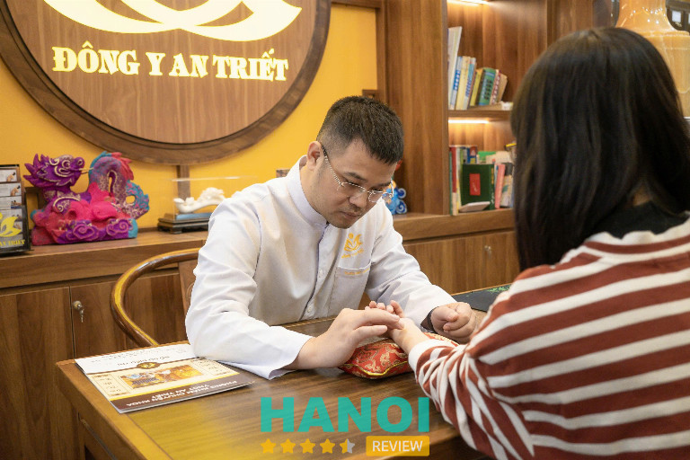
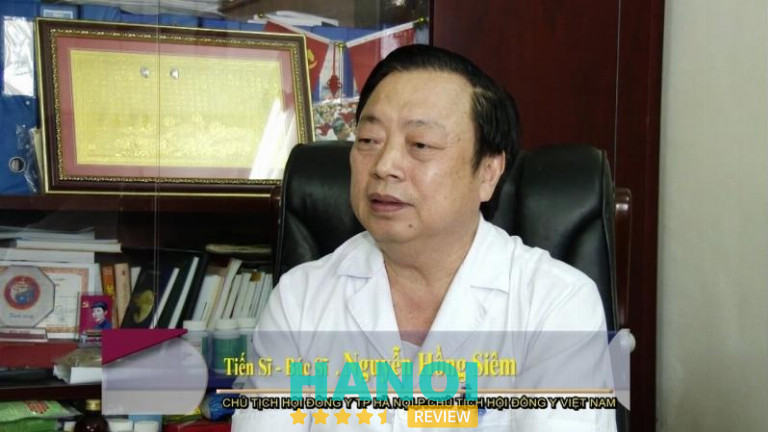
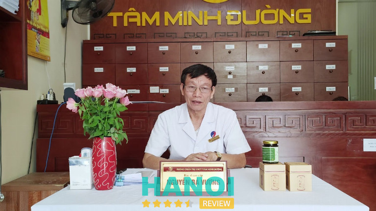

10 Bác sĩ Đông Y giỏi tại Hà Nội yêu nghề, tận tâm với người bệnh
Hiện nay, các bác sĩ Đông y giỏi tại Hà Nội đang được nhiều người quan tâm và tìm kiếm. Không những vậy, từ xa xưa phương pháp chữa bệnh bằng Đông y được người người nhà nhà lựa chọn bởi nó chủ yếu sử dụng thảo dược thiên nhiên nên vô cùng lành tính và an toàn.
Top 10 bác sĩ Đông Y giỏi tại Hà Nội được nhiều bệnh nhân tin tưởng
Đối với một số bệnh, mọi người thường lựa chọn thuốc Đông y thay vì Tây y bởi nó có nhiều ưu điểm và lành tính hơn, không gây nóng gan hoặc tác dụng phụ nhiều. Tuy nhiên, với thời đại công nghệ dần hiện đại và phát triển, rất nhiều cơ sở khám chữa bệnh mọc lên khiến bạn gặp khó khăn trong việc tìm kiếm bác sĩ Đông y giỏi. Nếu bạn vẫn chưa chọn được bác sĩ uy tín thì có thể tham khảo một vài gợi ý sau đây:
TS. BS Ngô Quang Hải
Khi nhắc đến các bác sĩ đông y giỏi ở khu vực Hà Nội Tiến Sĩ, Bác Sĩ Ngô Quang Hải – Nguyên Phó Giám Đốc Trung Tâm Đào Tạo và chỉ đạo tuyến Bệnh Viện Châm Cứu TW – Uỷ viên thường vụ Hội Châm Cứu Việt Nam, người đã có hơn 10 năm học tập nghiên cứu tại Trung quốc và trải qua nhiều năm công tác tại Bệnh viện Châm cứu Trung Ương, từng đảm nhiệm nhiều vị trí quan trọng trong các đơn vị y tế là một cái tên không thể thiếu.

Hiện tại, TS.BS Hải đang làm việc, công tác tại Phòng khám Chuyên khoa YHCT An Triết và chuyên điều trị các bệnh lý bằng phương pháp YHCT như:
- Bệnh lý cơ xương khớp: thoái hóa đa khớp, thoái hóa cột sống, đau thần kinh tọa, đau cổ vai gáy,…
- Viêm mũi dị ứng, ho, viêm họng, hen suyễn
- Rối loạn tiêu hóa, hội chứng ruột kích thích, táo bón, đau dạ dày, viêm loét dạ dày tá tràng, trào ngược dạ dày thực quản
- Giảm béo, kinh nguyệt không đều, yếu sinh lý nam – nữ
- Những bệnh nan y khó chữa khác
Trong đó, đặc biệt là nhóm bệnh rối loạn lo âu, trầm cảm và mất ngủ. TS.BS Ngô Quang Hải không chỉ kết hợp các phương pháp châm truyền thống mà còn áp dụng các trường phái châm mới xuất phát từ nền y học Trung Hoa như: Phúc châm, phù châm, tiểu châm đao, cận tam châm … kết hợp với việc dùng thuốc YHCT và các phương pháp YHCT khác đã được chứng minh lâm sàng qua hiệu quả trong việc cắt thuốc và điều trị đã cải thiện được tình trạng bệnh cho rất nhiều bệnh nhân.
Nhiều bệnh nhân và đồng nghiệp nhận xét, với TS.BS Ngô Quang Hải, nghề y không chỉ dừng lại ở việc điều trị triệu chứng mà là cả quá trình đồng hành, sẻ chia, khơi dậy niềm tin và mang lại sự an yên cho người bệnh. Hơn 16 năm tận tụy trong nghề, với phương châm “ Cứu Thế Lương Dược, Diệu Thủ Hồi Xuân” bác sĩ vẫn giữ nguyên tâm huyết giúp từng bệnh nhân không chỉ hồi phục sức khỏe mà còn lấy lại niềm vui, sự tự tin để sống một cuộc đời ý nghĩa hơn. Chính sự tận tâm, kiên nhẫn và cái nhìn toàn diện về thể chất lẫn tinh thần đã làm nên uy tín và hình ảnh một người thầy thuốc đáng tin cậy, được nhiều gia đình gửi gắm sức khỏe qua nhiều thế hệ.
Thông tin liên hệ:
- Cơ Sở 1: 198 Thái Thịnh, phường Đống Đa, Thành phố Hà Nội – Hotline: 0916010590
- Cơ Sở 2 : T6-BT1-L4, Khu nhà ở liền kề Intracom 1 Trung Văn, Phường Đại Mỗ, Hà Nội – Hotline: 0867 971 369
- Website: dongyantriet.com
- Fanpage: Fb.com/TSNgoQuangHai (PHÒNG KHÁM CHUYÊN KHOA YHCT An Triết)
Thạc sĩ, Bác sĩ Nguyễn Thị Tuyết Lan
Thạc sĩ, Bác sĩ Nguyễn Thị Tuyết Lan cũng là một trong những vị lương y giỏi, giàu kinh nghiệm và tâm huyết với ngành Đông y. Bác đã điều trị thành công cho hàng trăm ca bệnh khác nhau từ nhẹ đến nặng bằng những phương thuốc Đông y gia truyền đã được nghiên cứu kỹ lưỡng và được nhiều chuyên gia công nhận.
Sở dĩ bác sĩ Tuyết Lan được nhiều người dân tin tưởng và yêu mến như vậy vì bà là người thầy thuốc giỏi và có vị thế uy tín cao. Hiện bà đang là giám đốc chuyên môn của Trung tâm Nghiên cứu và Ứng dụng Thuốc dân tộc thuộc Bệnh Y học cổ truyền trung ương. Đồng thời, bà có nhiều công trình nghiên cứu về chữa trị bệnh bằng phương pháp Đông y được nhà nước đánh giá cao và khen ngợi.
Bên cạnh đó, Thạc sĩ, Bác sĩ Nguyễn Thị Tuyết Lan còn luôn cố gắng nghiên cứu ứng dụng các phương pháp chữa trị hay từ những dược liệu quý trong y học cổ truyền để có thể cứu chữa và nâng niu sức khỏe của nhân dân.
Ngoài làm việc tại bệnh viện, bác sĩ Lan còn có trung tâm phòng khám riêng để có thể đáp ứng mọi nhu cầu của người dân. Tại phòng khám của Th.S, BS Nguyễn Thị Tuyết Lan có trang bị đầy đủ hệ thống cơ sở vật chất hiện đại, sạch sẽ để phục vụ cho công tác khám chữa bệnh một cách chỉn chu nhất.
Cũng giống như nhiều lương y khác, Bác sĩ Tuyết Lan cũng đã và đang tích cực đóng góp những công lao to lớn trong việc nâng cao, giữ gìn và phát huy ngành Y học cổ truyền dân tộc nước nhà. Do đó, khi đến với bác sĩ Lan mọi khách hàng đều sẽ được tiếp đón và thăm khám chu đáo.
Thông tin liên hệ:
- Địa chỉ: 29 Nguyễn Bỉnh Khiêm, Nguyễn Du, Quận Hai Bà Trưng, Hà Nội
- Điện thoại: 0904 778 682
- Facebook: FB.com/tuyetlan.thuocdantoc
Lương y Nguyễn Hữu Toàn
Một trong những bác sĩ đầu tiên bài viết muốn gợi ý đó chính là lương y Nguyễn Hữu Toàn. Ông là người có năng khiếu ham học hỏi và kiến thức sâu rộng về ngành Đông y. Do đó, ông sở hữu nhiều phương pháp trị bệnh gia truyền và vô số các bài thuốc Đông y hay.
Không dừng lại ở đó, ông chính thức thành lập phòng khám Đông y Nguyễn Hữu Toàn (1990) nhờ có sự cho phép của Cụ Hách. Đồng thời, ông được nhà nước công nhân là thầy thuốc đông y cấp quốc gia vào năm 2001 và đã chữa bệnh cho hàng nghìn người dân ở khắp trên toàn quốc.
Những lý do bạn nên chọn bác sĩ Đông y Nguyễn Hữu Toàn:
- Có nhiều kiến thức chuyên môn để khám chữa các bệnh cho người dân đi đôi và thường xuyên nghiên cứu để tìm ra các bài thuốc dân gian bí truyền giúp đạt hiệu quả cao hơn
- Đã từng điều trị thành công cho hàng chục nghìn ca bệnh nan y như: rối loạn tiền đình, khối u, bệnh thận và đặc biệt là chuyên chữa trị bệnh vô sinh
- Ngoài dùng thuốc, bác sĩ còn giỏi bắt mạch, châm cứu, bấm huyệt giúp bệnh nhân nhanh chóng khỏi bệnh
- Thường xuyên tổ chức các buổi hoạt động từ thiện như thăm khám bệnh và phát thuốc miễn phí cho người dân nghèo
Với những lợi ích mà bác sĩ Nguyễn Hữu Toàn đã đóng góp cho sức khỏe cộng đồng, bác được người dân ca ngợi chính là vị lương y từ mẫu. Bên cạnh đó, ông còn được hội đông y và tổ chức chính phủ biểu dương khen thưởng. Do vậy, bác chính là “vị cứu tinh” dành cho bạn nếu đang cần tìm kiếm lương y giỏi để trao gửi dịch vụ.
Thông tin liên hệ:
- Địa chỉ: 16 lô 1B, Trung Yên 11, Phường Trung Hòa, Quận Cầu Giấy, Hà Nội
- Điện thoại: 1800 6834
- Email: thaythuoccuaban01@gmail.com
- Website: amp.thaythuoccuaban.com
- Fanpage: FB.com/luongynguyenhuutoancamketchuakhoibenhgi
GỢI Ý: 10 Phòng khám Đông Y tại Hà Nội uy tín, đáng tin cậy nhất
PGS. TS. BS Trần Quốc Bình
Phó giáo sư, Tiến sĩ, Bác sĩ Trần Quốc Bình sở hữu nhiều thành tích khủng trong ngành Đông y. Ông được Thủ tướng Chính Phủ và Bộ trưởng Y tế trao tặng nhiều bằng khen và các danh hiệu quý như Thầy thuốc ưu tú (2001), Thầy thuốc nhân dân (2012),…
Với hơn 35 năm kinh nghiệm làm nghề trong lĩnh vực Y học cổ truyền, ông đã chữa trình cho rất nhiều bà con. Đồng thời, ông cũng đảm nhiệm nhiều thành tích và vị trí quan trọng phải kể đến như Phó trưởng khoa Y học cổ truyền của ĐH Y Hà Nội, Giám đốc bệnh viện Y học cổ truyền Trung ương,…
Một số căn bệnh mà Phó giáo sư, Tiến sĩ, Bác sĩ Trần Quốc Bình đã từng điều trị bằng phương pháp y học cổ truyền, bao gồm: tăng huyết áp, thiểu năng tuần hoàn não mạn tính, đau dây Thần kinh liên sườn, viêm da cơ địa, tiền đình, tâm căn suy nhược, eczema, mất ngủ,… Đặc biệt, ông có thế mạnh về những bệnh lý tim mạch.
Là một vị có sĩ giỏi, có nhiều kinh nghiệm chữa bệnh với sự kết hợp giữa phương pháp y học cổ truyền và y học hiện đại đã giúp hàng trăm khách hàng nhanh chóng cải thiện được tình trạng bệnh cũng như dần phục hồi sức khỏe của mình. Bên cạnh đó, ông còn hợp tác với nhiều chuyên gia hàng đầu của các nước Nhật Bản, Trung Quốc để phát triển những bài thuốc Đông y hay dành cho người dân.
Do vậy, ông xứng đáng trở thành lương y tận tâm được nhiều người dân tin tưởng. Hiện bác đang công tác tại bệnh viện y học cổ truyền Trung ương và phòng mạch riêng. Bạn có thể liên hệ trước để đặt lịch và tránh phải chờ đợi lâu.
Thông tin liên hệ:
- Địa chỉ: 20/167 Lê Thanh Nghị, Phường Đồng Tâm, Quận Hai Bà Trưng, Hà Nội
- Điện thoại: 024 386 98707
- Website: yhctquocbinh.vn
PGS.TS.BS chuyên khoa II Dương Trọng Nghĩa
Khi nhắc đến danh sách các bác sĩ đông y giỏi ở khu vực Hà Nội, chắc chắn không thể bỏ qua Phó Giáo sư, Tiến sĩ, Bác sĩ chuyên khoa II Dương Trọng Nghĩa. Hiện bác đang là trưởng khoa châm cứu công tác ở bệnh viện Y học cổ truyền Trung ương. Bên cạnh đó, bác sĩ còn được biết đến với vai trò là giảng viên tại Trường ĐH Y Hà Nội.
Sau nhiều năm hoạt động trong nghề, Phó Giáo sư, Tiến sĩ, Bác sĩ chuyên khoa II Dương Trọng Nghĩa đã từng điều trị thành công cho nhiều người mắc các bệnh nặng. Qua đó giúp họ nhanh chóng hồi phục sức khỏe và lấy lại thể trạng ban đầu cũng như phòng ngừa tối đa các nguy cơ tái phát.
Phó Giáo sư, Tiến sĩ, Bác sĩ chuyên khoa II Dương Trọng Nghĩa có thể điều trị nhiều loại bệnh khác nhau bằng phương tác Đông y như: phục hồi chức năng, nội tiết, đau dây thần kinh, sỏi thận, thoát vị đĩa đệm, cơ xương khớp, tim mạch,… Khi đến với bác, bạn sẽ được thăm khám và chẩn đoán theo quy trình rõ ràng, cẩn thận. Toàn bộ bài thuốc đều làm từ dược liệu thực vật thiên nhiên, lành tính và tốt cho sức khỏe.
Ngoài làm việc tại Bệnh viện Y học cổ truyền Trung ương, bác còn sở hữu phòng mạch riêng. Chính vì vậy, nếu bạn bận rộn và không có thời gian đến khám chữa bệnh trong giờ hành chính thì có thể liên hệ cũng như đến phòng khám riêng của bác để tiết kiệm thời gian.
Thông tin liên hệ:
- Địa chỉ: 3B Ng. 4 P. Phương Mai, Ngach 22, Quận Đống Đa, Hà Nội
- Điện thoại: 024 3577 2733
TS. BS chuyên khoa II Nguyễn Công Doanh
Tiến sĩ, Bác sĩ chuyên khoa II Nguyễn Công Doanh cũng là lương y đáng tin cậy mà bạn có thể tham khảo. Với vốn kinh nghiệm gần 45 năm trong lĩnh vực y học cổ truyền, ông có thể khám và chữa trị nhiều bệnh lý khác nhau, đặc biệt là về chuyên khoa thần kinh – cột sống, phục hồi chức năng.
Một số lý do bạn nên tin chọn TS. BS chuyên khoa II Nguyễn Công Doanh:
- Có gần 45 năm kinh nghiệm trong ngành Đông Y
- Là thành viên của Hội Y học cổ truyền Việt Nam, từng tham gia công tác ở Bệnh viện Bạch Mai và đang làm việc tại khoa Y học cổ truyền của Bệnh viện đa khoa Bảo Sơn
- Là bác sĩ hàng đầu trong lĩnh vực cột sống – thần kinh và phục hồi chức năng ở khu vực Hà Nội
- Có nhiều đóng góp to lớn cho nền y học cổ truyền trong và ngoài nước
- Là bác sĩ có trình độ chuyên môn cao, tận tâm và luôn nhiệt tình cứu chữa hết mình cho các bệnh nhân
Sau nhiều năm hoạt động trong ngành, bác sĩ Nguyễn Công Doanh còn đạt được nhiều thành tích và chứng chỉ công nhận của các tổ chức ban ngành. Chính vì vậy, Tiến sĩ, Bác sĩ chuyên khoa II Nguyễn Công Doanh chính là cái tên hàng đầu mà bạn có thể tin tưởng và lựa chọn khi có nhu cầu điều trị sức khỏe bằng phương pháp Đông Y.
Bác sĩ Doanh hiện đang công tác ở Bệnh viện Đa khoa Bảo Sơn. Do đó, bạn có thể liên hệ và đến Tiến sĩ, Bác sĩ chuyên khoa II Nguyễn Công Doanh để khám thông qua bệnh viện.
Thông tin liên hệ:
- Địa chỉ: (Bệnh viện đa khoa Bảo Sơn) 52 Nguyễn Chí Thanh, P. Láng Thượng, Quận Đống Đa, Hà Nội
- Điện thoại: 1900 599 858
THAM KHẢO: 12 Địa chỉ massage body trị liệu tại Hà Nội dịch vụ tốt nhất
Bác sĩ Đông y Nguyễn Hồng Siêm
Bác sĩ Nguyễn Hồng Siêm sinh năm 1956 ở huyện Tiên Lũ thuộc tỉnh Hưng Yên cũng là một trong số những người thầy thuốc ưu tú tại Hà Nội mà bạn có thể tham khảo. Năm 1975, bác bắt đầu làm việc trong ngành Y tế Việt Nam. Trải qua hàng chục năm phấn đấu và gắng bó với nghề, hiện Bác sĩ Đông y Nguyễn Hồng Siêm đang giữ chức PCT Trung ương Hội Đông y VN, CT Hội Đông y TP Hà Nội và làm việc tại Phòng chẩn trị Y học cổ truyền.
Nhờ có hơn 45 năm kinh nghiệm làm việc thăm khám – chữa bệnh bằng phương pháp y học cổ truyền, bác sĩ Siêm ngày càng nhận được nhiều đánh giá cao từ các chuyên gia trong lĩnh vực và người dân. Đặc biệt, bác có thể điều trị những bệnh nội khoa, nhi khoa và cả ngoại khoa một cách hiệu quả.

Một số ưu điểm khi điều trị bệnh với lương y Nguyễn Hồng Siêm:
- Phòng khám của ông có đầy đủ giấy phép hoạt động nên người dân có thể an tâm khi khám chữa bệnh
- Là người đi đầu trong ngành y học cổ truyền có nhiều bài nghiên cứu, đóng góp quan trọng và là giảng viên của các trường ĐH y dược
- Sở hữu nhiều phương pháp và bài thuốc hay có thể chữa dứt điểm nhiều loại bệnh nan y
- Ngoài trình chuyên môn cao, bác sĩ còn tận tâm, chu đáo và luôn ân cần với người bệnh
Đặc biệt, trong nhiều năm qua phòng khám bệnh của bác liên tục đầu tư nhiều trang thiết bị tân tiến như máy bấm huyệt, châm cứu, đo điện tim,… để hỗ trợ quá trình thăm khám, chẩn đoán và điều trị bệnh được nhanh chóng và mang lại hiệu quả cao hơn.
Được đánh giá là một trong những chuyên gia đầu ngành Đông y tại Việt Nam và đã tận tình chữa trị thành công cho hàng trăm nghìn bệnh nhân. Bác sĩ Nguyễn Hồng Siêm chính là người thầy thuốc xứng đáng để bạn tin tưởng và theo khi cần điều trị bệnh.
Thông tin liên hệ:
- Địa chỉ: 339 Quang Trung, Quận Hà Đông, Hà Nội
- Điện thoại: 0983 476 588
Bác sĩ Nguyễn Bá Vưỡng
Bác sĩ Nguyễn Bá Vưỡng được sinh ra và lớn lên trong một gia đình có truyền thống hành nghề y chuyên chữa bệnh cứu người có tiếng tại Hà Thành. Chính vì vậy, ngay từ khi còn bé ông đã được tiếp xúc và học về các vị thuốc và phương pháp chữa bệnh Đông y. Sau này, ông vẫn tiếp nối ngọn lửa nghề của gia đình và không ngừng cố gắng học tập với chuyên ngành Y học cổ truyền Việt Nam.
Trong suốt thời gian mài dũa kinh sách trên giảng đường đại học, ông luôn là sinh viên xuất sắc tiêu biểu của trường. Đồng thời, ông cũng thường xuyên trau dồi kiến thức và kinh nghiệm thông qua các chương trình nghiên cứu riêng để nâng cao năng lực bản thân và đóng góp cho lĩnh Đông y nước nhà.

Sau khi tốt nghiệp, bác sĩ Nguyễn Bá Vưỡng đã được phân công về công tác ở bệnh viện Y học cổ truyền Quân đội. Tại đây, bác trở thành nhân vật có tiếng tăm của viện Y học cổ truyền nhờ giữ chức phó khoa Đông y với quân hàm đại tá.
Suốt gần 30 năm cống hiến không ngừng nghỉ cho ngành Y học cổ truyền Việt Nam, bác đã tích góp đủ kiến thức chuyên môn và kinh nghiệm để mở Phòng chẩn trị YHCT Tâm Minh Đường. Đến với Tâm Minh Đường, khách hàng sẽ được bác sĩ Vưỡng trực tiếp bắt mạch, chẩn đoán và bốc thuốc một cách chuẩn xác.
Với những gì mà bác đã cống hiến cho đời và cứu chữa cho hàng nghìn bệnh nhân từ khắp nơi trên mọi miền tổ quốc, bác sĩ – đại tác Vưỡng chính là vị lương y tốt mà bạn đang cần tìm kiếm.
Thông tin liên hệ:
- Địa chỉ: 138 Nguyễn Khương Đình, Quận Thanh Xuân, Hà Nội
- Điện thoại: 0983 340 246
- Email: bacsivuongtamminhduong@gmail.com
- Website: tamminhduong.com
TS. BS Lê Mạnh Cường
Tiến sĩ, Bác sĩ Lê Mạnh Cường có hơn 25 kinh nghiệm trong nghề, được mệnh danh là “người thấy thuốc ưu tú” có trình độ chuyên môn cao về lĩnh vực Đông y. Bác sĩ Cường chuyên điều trị các bệnh lý rối loạn sàn chậu, hậu môn trực tràng,… bằng phương pháp Đông y vô cùng hiệu quả.
Một số bệnh lý của các bệnh nhân đã từng được bác chữa khỏi phải kể đến như: rò trực tràng âm đạo, sa thành trực tràng, polyp đại tràng, trĩ tái phát, viêm loét dạ dày – tá tràng, u sùi mào gà hậu môn, áp xe hậu môn, viêm mủ đa nang lông,…
Để có được những kinh nghiệm và phương pháp chữa trị hay như vậy cho các bệnh nhân, bác đã không ngừng nỗ lực – học hỏi kiến thức cho bản thân. Ngoài tiếp thu những kiến thức về y học cổ truyền trong nước, bác sĩ Cường còn đến các nước như Trung, Mỹ, Nhật, Pháp, Đức, Ý,… để mở rộng nền tảng học thuật cho bản thân.
Đồng thời, bác cũng được nhiều tổ chức ban ngành công nhận, đạt các chứng chỉ quan trọng. Bao gồm: chứng chỉ Phẫu thuật Secca, danh hiệu Thầy thuốc ưu tú (2016) – bác sĩ cao cấp (2017), thành viên của nhiều tổ chức Đông y trong nước, từng đảm nhận vị trí Phó chủ tịch Hội Đại trực tràng học Việt Nam,…
Thông tin liên hệ:
- Địa chỉ: 46, ngõ 116, phố Yên Lạc, P. Vĩnh Tuy, Quận Hai Bà Trưng, Hà Nộị
- Điện thoại: 0912 234 722
THAM KHẢO: 5 Phòng khám Cơ Xương Khớp tại Hà Nội có bác sĩ chuyên môn cao
PGS. TS Nguyễn Văn Toại
PGS. TS. BS Nguyễn Văn Toại cũng là một trong những thầy thuốc ưu tú của Việt Nam. Ông còn là giảng viên cao cấp với vai trò trưởng môn lý luận Y học cổ truyền của trường ĐH Y Hà Nội, đồng thời còn là phó trưởng khoa lão Bệnh viện Y học cổ truyền Trung Ương.
Nhờ có bề dày kinh nghiệm công tác ở nhiều nơi và đóng góp to lớn trong ngành Y học cổ truyền Việt Nam, PGS. TS Nguyễn Văn Toại đã được Chủ tịch nước và Bộ y tế phong tặng một số danh hiệu cao quý như Thầy thuốc ưu tú (2012), Hải thượng Lãn Ông (2019),…
Trong quá trình làm nghề, ông cũng thành lập phòng khám Đông y Phúc Thành riêng vào năm 1993. Sau 30 năm đi vào hoạt động, phòng khám của ông luôn trong tình trạng đông khách tấp nập. Tính đến nay, bác sĩ Toại đã chữa trị thành công cho hàng nghìn ca bệnh trong và ngoài nước và phòng khám của ông trở thành một đơn những đơn vị khám Đông y uy tín nhất nhì khu vực Hà Nội.
Có rất nhiều khách hàng có tình trạng bệnh nặng kèm theo các biến chứng sau khi được bác sĩ Toại thăm khám và bốc những bài thuốc gia truyền kết hợp với pháp đồ đặc trị đã nhanh chóng khỏi bệnh, hồi phục sức khỏe như ban đầu.
Là một trong những người thầy thuốc có tâm sáng và yêu nghề, bác sĩ Nguyễn Văn Toại chắc chắn là vị lương y đáng tin cậy giúp bạn thoát khỏi nhiều bệnh lý ngặt nghèo.
Thông tin liên hệ:
- Địa chỉ: 5 Trần Khát Chân, P. Thanh Lương, Quận Hai Bà Trưng, Hà Nội
- Điện thoại: 0386 052 900
- Website: dongyphucthanh.vn
5 Tiêu chí cần có để chọn bác sĩ Đông y giỏi, có trình độ chuyên môn cao
Hiện nay, để tìm được một vị bác sĩ Đông y giỏi và trình độ kiến thức sâu rộng là điều không hề dễ dàng. Nếu chọn phải bác sĩ giả, không có chuyên môn sẽ khiến tình trạng bệnh trở nên nặng hơn và thậm chí gây ra nhiều biến chứng làm nguy hại đến tính mạng. Nếu bạn vẫn còn đang phân vân chưa chọn được bác sĩ uy tín, đáng tin cậy để trao gửi dịch vụ thì có thể tham khảo một số kinh nghiệm sau đây:
- Bằng cấp chuyên môn: Hiện nay, một số vị bác sĩ tự xưng đang ngập tràn và khó phân biệt. Do đó, bạn cần tỉnh táo để tìm kiếm bác sĩ Đông y có đầy đủ bằng cấp chuyên môn và đào tạo từ các trường đại học danh tiếng. Đồng thời, bạn có thể xác thực thông tin về các bác sĩ thông qua google xem và ưu tiên những người được báo chí và truyền thông quốc gia công nhận.
- Phương pháp điều trị: Mỗi một vị bác sĩ có những phương pháp điều trị bí truyền khác nhau. Bạn hãy tìm hiểu về các phương pháp điều trị mà bác sĩ áp dụng xem nó đã được giới chuyên gia công nhận và có tính khoa học thực tiễn hay không. Bên cạnh đó, nên cân nhắc lựa chọn phương pháp phù hợp với mình.
- Tham khảo những đánh giá từ bệnh nhân khác: Bạn nên dò tìm và tham khảo những nhận xét, phản hồi của các bệnh nhân từng chữa trị tại các bác sĩ đó để có những đánh giá khách quan về mức độ hài lòng và tính hiệu quả.
- Tuân theo phác đồ điều trị: Hãy luôn tuân thủ theo phác đồ và những hướng dẫn của bác sĩ để đảm bảo thời gian điều trị được diễn ra theo đúng lịch trình và đạt được hiệu quả cao nhất.
- Chi phí điều trị: Khi thăm khám ở bất kỳ đâu, bạn nên hỏi trước với bác sĩ về chi phí và có chấp nhận bảo hiểm y tế hay không. Điều này sẽ giúp bạn có được sự chuẩn bị tốt về mặt tài chính trong suốt quá trình điều trị mà không cần phải lo lắng.
Trên đây là top 10 bác sĩ Đông y giỏi tại Hà Nội có trình độ chuyên môn cao và dày dặn kinh nghiệm trong nghề mà bạn có thể tham khảo. Hy vọng những thông tin do HaNoiReview cung cấp có thể giúp bạn tìm được người thầy thuốc đáng tin cậy để trao gửi niềm tin. Chúc bạn luôn sống vui khỏe mỗi ngày.
Có thể bạn quan tâm
- 10 Bác sĩ phẫu thuật thẩm mỹ tại Hà Nội giỏi, mát tay nhất
- 10 Phòng khám đa khoa tại Hà Nội bác sĩ giỏi, uy tín hàng đầu
- 10 Phòng khám mắt tại Hà Nội bác sĩ giỏi, dịch vụ chất lượng
- 10 Địa chỉ châm cứu bấm huyệt tại Hà Nội uy tín, bác sĩ giàu kinh nghiệm
DOANH NGHIỆP: Đăng tải thông tin MIỄN PHÍ.
Tin đọc nhiều


Trở thành người đầu tiên bình luận cho bài viết này!